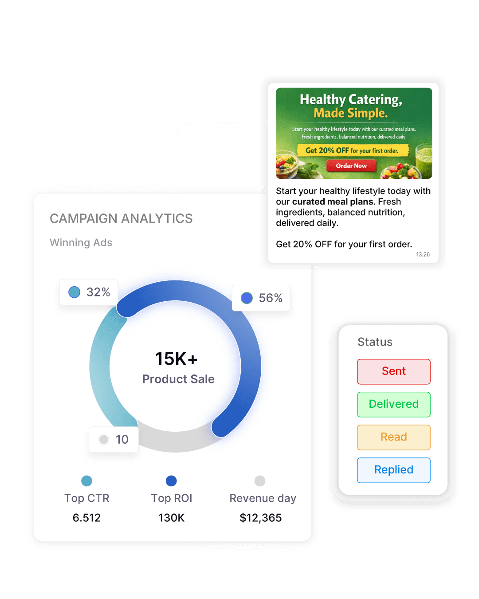
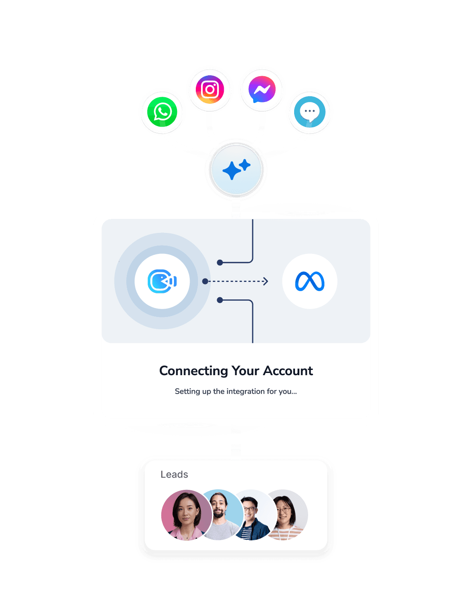

End-to-end ads attribution
Cekat.AI connects ad performance directly to business outcomes. See which campaigns generate leads, conversions, and sales—not just clicks.
Campaigns & performance analytics
See the full picture of your marketing performance with insights backed by data, not assumptions.
14-day free trial · No credit card required · Set up in about 10 minutes

Trusted by teams at


Why Marketing
Cekat.AI connects ad performance directly to business outcomes. See which campaigns generate leads, conversions, and sales—not just clicks.
Track what customers do after clicking your ads, from website visits and button clicks to form submissions and custom events.
Review Meta Ads performance directly inside Cekat.AI. Campaign data, leads, and conversion insights are centralized so teams can analyze and optimize faster.
How it works
Explore each part of the workflow. The supporting product view updates as you choose a step.
 Cekat Marketing01 / 05
Cekat Marketing01 / 05
Cekat.AI Marketing is an AI-powered marketing analytics platform that helps you track ads performance, customer behavior, and ROI in one unified dashboard.
Cekat.AI connects ads data with customer behavior and conversions, so you can see which campaigns drive revenue.
Yes. Cekat.AI tracks website behavior, chat interactions, and custom events to build complete customer profiles.
You can segment customers based on behavior and run personalized campaigns and broadcasts.
Cekat Marketing
Stop guessing which campaigns work. Track ads, understand customer behavior, and optimize every marketing dollar with Cekat.AI.